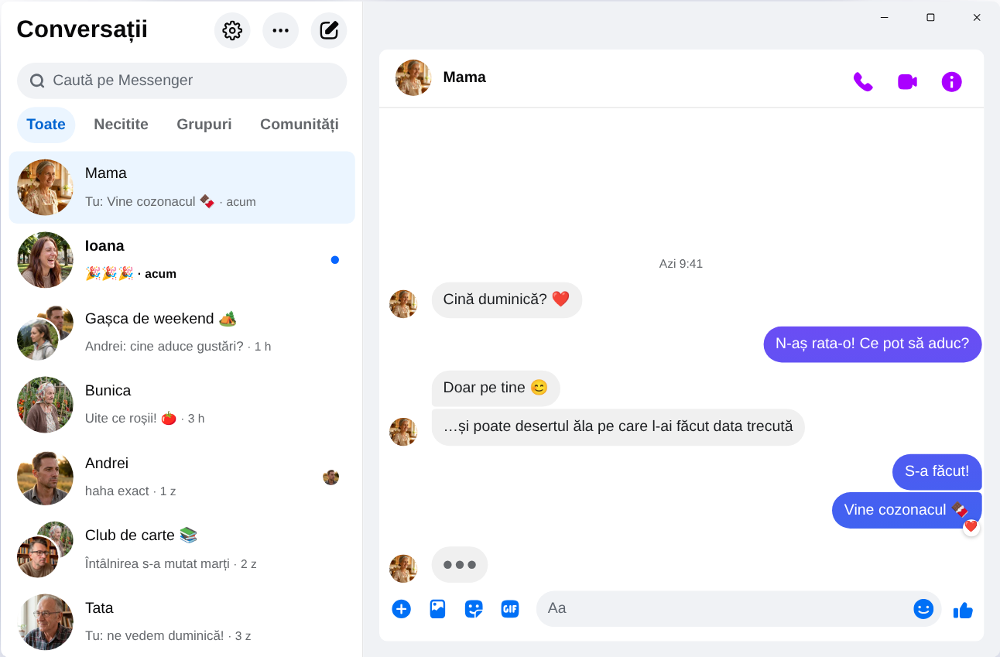

Chatpane / Windows
Actualizat în noiembrie 2026
Cum folosești Messenger pe PC în 2026
Meta a închis aplicația Messenger pentru Windows pe 15 decembrie 2025, iar messenger.com te trimite acum pe Facebook. Iată ce funcționează azi pe un PC sau laptop cu Windows 10 sau 11.
Gratis și open-source · Windows 10 și 11 · Nu este o aplicație Meta
Pe scurt
Nu mai există o aplicație Messenger oficială pentru PC. Meta a scos-o din Microsoft Store, iar din aprilie 2026 Messenger pe calculator funcționează doar pe facebook.com/messages, în interiorul Facebook.
Dacă vrei Messenger într-o fereastră separată, fără feed și Reels, Chatpane este o aplicație gratuită și open-source pentru Windows care îți deschide conversațiile și nimic altceva. Este un proiect independent: nu aparține Meta.
De ce nu mai merg ghidurile vechi
Multe ghiduri încă îți spun să cauți Messenger în Microsoft Store, iar site-uri de descărcări precum Softonic oferă în continuare fișierul de instalare „Messenger 2250.1”. Este chiar aplicația pe care Meta a închis-o în decembrie 2025: când o deschizi, doar te trimite pe Facebook. Nu câștigi nimic dacă o instalezi.
Nu-ți introduce parola de Facebook într-un program sau pe o pagină despre care nu știi de unde vine. Dacă cineva îți oferă „Messenger pentru PC” cu propriul ecran de autentificare, fii atent.
Ce s-a întâmplat cu Messenger pentru Windows?
În 2024, Meta a înlocuit aplicația pentru Windows cu o versiune web împachetată. În octombrie 2025 a anunțat închiderea și a scos-o din Microsoft Store, iar pe 15 decembrie 2025 aplicația a încetat să funcționeze. În aprilie 2026 s-a închis și messenger.com. Datele și detaliile sunt în articolul Messenger pe calculator nu mai merge.
Variantele tale
Cum folosești Messenger pe Windows
Chatpane pe Windows
Chatpane deschide același Messenger pe care îl vezi în browser, deci conversațiile, grupurile, apelurile și pozele sunt toate acolo și rămân sincronizate cu telefonul. Dispare doar restul de pe Facebook.
- Doar Messenger. Feed-ul, Reels, Marketplace și căutarea Facebook sunt ascunse.
- Notificări utile. Răspunde, reacționează, marchează ca citit sau dezactivează sunetul direct din notificare, fără să deschizi fereastra. Util dacă vinzi pe Marketplace și nu vrei să pierzi un client.
- Bara de activități și zona de notificare. Numărul de mesaje necitite pe pictogramă, pornirea odată cu Windows și opțiunea de a rămâne deschis în zona de notificare când închizi fereastra.
- Confidențialitate. Ascunde că scrii, ascunde numele și pozele de profil când partajezi ecranul și blochează cererile de analiză ale Facebook (activat implicit).
- În română. Chatpane folosește limba calculatorului, așa că meniurile și setările apar în română.

Cum îl instalezi
- Descarcă programul de instalare pentru Windows. Dacă PC-ul tău are procesor ARM, folosește varianta ARM64.
- Deschide-l. Programele de instalare Chatpane pentru Windows nu au încă semnătură digitală, așa că SmartScreen poate afișa un avertisment că Windows ți-a protejat PC-ul. Dă clic pe „Mai multe informații”, apoi pe „Executare oricum”. Descarcă Chatpane doar de pe chatpane.app sau de pe GitHub.
- Autentifică-te cu contul tău obișnuit de Facebook. Conversațiile apar imediat.
Nu vrei să instalezi nimic? Versiunea portabilă (.zip) merge fără instalare.
Întrebări frecvente
Întrebări despre Messenger pe PC
Este Chatpane gratuit?
Da. Fără preț, fără abonament, fără reclame. Este open-source sub licența MIT, iar codul e publicat pe GitHub, ca oricine să-l poată verifica.
Este aplicația oficială Messenger?
Nu. Chatpane este un proiect independent, fără legătură cu Meta. Afișează Messengerul adevărat de pe facebook.com/messages într-o fereastră proprie, deci mesajele tale trec în continuare prin Messenger și se aplică termenii Meta.
Merge fără cont de Facebook?
Nu. Din aprilie 2026, Meta permite folosirea Messenger fără cont de Facebook doar în aplicația de pe telefon. Pe calculator, Chatpane și orice altă variantă au nevoie de un cont care se poate conecta pe facebook.com.
Merge pe Windows 10?
Da, pe Windows 10 și 11. Chatpane folosește Microsoft Edge WebView2, care vine deja cu Windows 11. Pe Windows 10, programul de instalare îl descarcă dacă lipsește.
Pot face apeluri video?
Da. Este Messengerul complet, așa că apelurile audio și video se deschid în propria fereastră, la fel ca pe facebook.com.
Descarcă Chatpane
Gratis și open-source. Se descarcă în câteva secunde - are doar circa 4 MB.
Mai sunt disponibile: .zip portabil · ARM .exe · ARM .zip
Mac Intel mai vechi? Intel .dmg
Lista completă, cu sume de control, se află pe
GitHub
- sau brew install --cask kristofferR/tap/chatpane